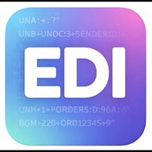
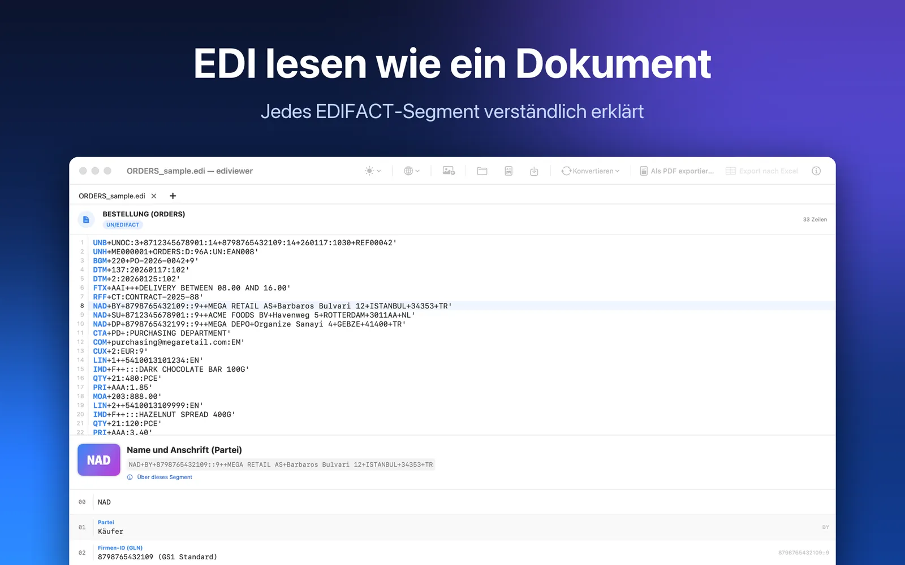

Read EDI files like documents
ediviewer opens EDIFACT and ANSI X12 messages and shows what every segment means in plain language. No counting plus signs and colons. A native app for Mac and Windows.
Your files never leave your computer: no account, no upload, no tracking. The browser version has been retired; get the app from the Mac App Store or Microsoft Store.

- Every segment explained. Parties, dates, quantities, prices, taxes and references; NAD+BY becomes "Buyer", DTM+137 "Document date".
- Editor. Syntax highlighting, line numbers, instant re-parsing while you type; multiple documents in tabs.
- Conversion. EDI ↔ JSON ↔ XML, lossless: separators, UNA and line breaks are kept, every conversion verified byte by byte.
- Export. Printable PDF for ORDERS, INVOIC, DESADV, REMADV and more; Excel (CSV) for SLSRPT and PRICAT.
- 15 sample messages. A full EDIFACT order-to-payment story plus ANSI X12 850, 810, 856 and 997.
- 7 languages, light/dark. Deutsch, English, Türkçe, Français, Español, Italiano, 简体中文.